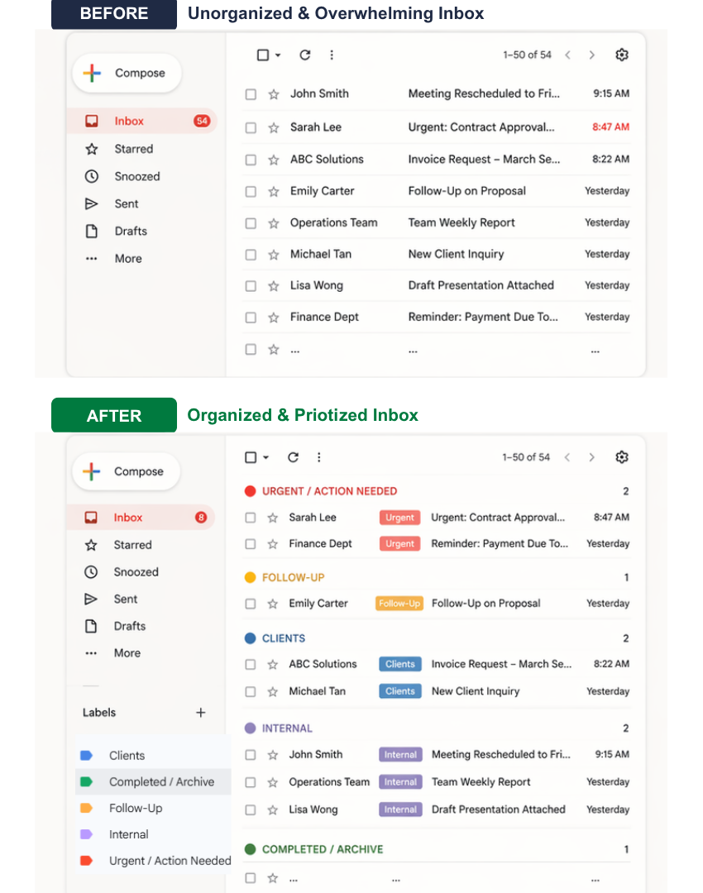

CASE STUDY 01
Inbox Management
SYSTEM FOR A BUSY EXECUTIVE
Organized. Prioritized. Nothing missed.
The Scenario
The client receives 50+ emails daily, leading to missed messages, delayed responses, and difficulty prioritizing tasks.
The Problem
- Important emails get buried
- No clear categorization
- Delayed responses
- Inbox clutter affecting productivity
My Approach
- Reviewed email types and common senders
- Created a labeling system based on priority and category
- Set up filters to automatically organize incoming emails
- Flagged urgent messages for immediate attention
The Result
Emails are now sorted automatically, reducing clutter and making it easier to focus on priority tasks.
Faster response time
Clear prioritization
Zero missed emails
